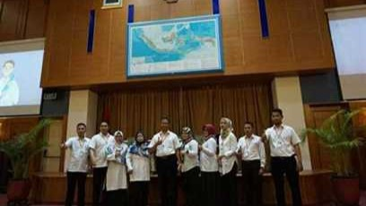
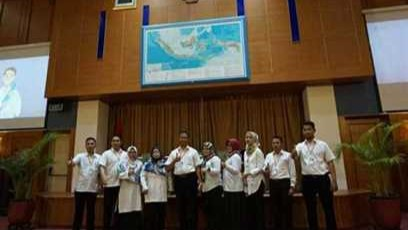

Manajemen Perkantoran dan Layanan Bisnis Merupakan Program keahlian pada Bidang Bisnis dan Manajemen dengan konsentrasi Keahlian Manajemen Perkantoran, memberikan kontribusi dalam menjadikan peserta didik memiliki kompetensi keahlian sebagai Staf Administrasi, Resepsionis, Asisten Arsiparis, Asisten Sekretaris, Layanan Pelanggan, dan sebagai tenaga operator junior dibidang komputer dan Otomatisasi perkantoran serta Wirausahawan yang tangguh dengan sikap bermantabat, Berkualitas dan Terpercaya.
TUJUAN PEMBELAJARAN KK MANAJEMEN PERKANTORAN
Tujuan Kosentrasi Keahlian Manajemen Perkantoran secara umum mengacu pada isi Undang Undang Sistem Pendidikan Nasional (UU SPN) pasal 3 mengenai Tujuan Pendidikan Nasional dan penjelasan pasal 15 yang menyebutkan bahwa pendidikan kejuruan merupakan pendidikan menengah yang mempersiapkan peserta didik terutama untuk bekerja dalam bidang tertentu.
Secara khusus tujuan Program Keahlian Manajemen Perkantoran (MP) dan PK Manajemen Perkantoran Layanan Bisnis (MPLB) adalah membekali peserta didik dengan keterampilan, pengetahuan dan sikap agar kompeten:
- Menerapkan dan mengembangkan kemampuan berkomunikasi baik lisan maupun tertulis dengan relasi dengan memperhatikan norma dan lingkungan masyarakat
- Menerapkan dan mengembangkan kemampuan mengoperasikan peralatan kantor & tehnologi informasi untuk melaksanakan tugas secara efektif dan efisien
- Menerapkan dan mengembangkan kemampuan untuk merencanakan, melaksanakan, mengorganisasi dan mengevaluasi tugas yang menjadi tanggung jawabnya
- Menerapkan dan mengembangkan kemampuan dalam mengelola surat/dokumen sesuai standar operasi dan prosedur untuk mendukung tugas pokok lembaga
- Menerapkan dan mengembangkan pelayanan terhadap relasi sehingga diperoleh manfaat masing-masing pihak.
- Menerapkan dan mengembangkan kemampuan mengelola administrasi keuangan, kepegawaian dan sarana prasarana sehingga segala aspek administrasi dapat dilaporkan dan dipertanggung jawabkan
- Menerapkan dan mengembangkan kemampuan prinsip-prinsip keselamatan, kesehatan kerja dan lingkungan hidup.
Kompetensi Keahlian Otomatisasi Dan Tata Kelola Perkantoran dan Konsentrasi keahlian Manajemen Perkantoran sebagai bagian dari pendidikan menengah, bertujuan menyiapkan siswa / tamatan :
- Memasuki lapangan kerja serta dapat mengembangkan sikap profesional dalam lingkup Program Keahlian Manajemen perkantoran, khususnya KK Otomatisasi Dan Tata Kelola Perkantoran.
- Mempu memilih karier, mampu berkompetisi dan mampu mengembangkan diri dalam lingkup Program keahlian Bisnis dan Manajemen, khususnya KK Otomatisasi Dan Tata Kelola Perkantoran
- Menjadi tenaga kerja tingat menengah untuk mengisi kebutuhan dunia usaha dan industri pada saat ini maupun masa yang akan datang dalam lingkup Program keahlian Manajemen Perkantoran, khususnya KK Otomatisasi Dan Tata Kelola Perkantoran
- Menjadi warga Negara yang produktif, adaptif, selektif dan kreatif
KOMPETENSI DASAR
- Teknologi Perkantoran
- Korespondensi
- Otomatisasi Tata Kelola Kepegawaian
- Otomatisasi Tata Kelola Keuangan
- Otomatisasi Tata Kelola Sarana dan Prasarana
- Otomatisasi Tata Kelola Humas dan Keprotokolan
- Mengembangkan Produk Kreatif dan Kewirausahaan
Kurikulum dan Materi pembelajaran pada kompetensi ini diselaraskan dengan kebutuhan Dunia Usaha dan Dunia Industri, seperti :
- Penerapan Teknologi Perkantoran.
- Typing
- Kehumasan.
- Penataan Surat Menyurat dan Kearsipan
- Tata Kelola Keuangan
Tim Pengajar Mapel Produktif OTKP
DRA. NINING HERNIDAH
YAYAH BAHRIAH
NANA ANGGRAENI, S.Pd
DINI WULANDARI, S.Pd

DENI MULIANA, S.Pd
AZIZ MUHAMMAD, S.Pd. M.M, M.BA
HIBAR RAHAYU, S.Pd

CINDY DIANA RATNASARI, S.Pd

REGINA SRINITA CP, S.Pd
KURIKULUM SINKRONISASI
Dalam penerapan kurikulum sinkronisasi Kompetensi Keahlian Otomatisasi dan Tata Kelola Perkantoran dan Konsentrasi Keahlian Manajemen Perkantoran SMKN 1 Subang telah melaksanakan kerja sama dengan beberapa industri pasangan yaitu :
- PT BINO MITRA SEJATI
- ASTON HOTEL
- ASPAPI JAWA BARAT
DOKUMENTASI SINKRONISASI BERSAMA PT BINO MITRA SEJATI dan ASTON PASTEUR HOTEL
KEGIATAN SINKRONISASI KURIKULUM BERSAMA ASPAPI JAWA BARAT
INDUSTRI PASANGAN

PELAKSANAAN PKL DAN KELAS INDUSTRI
PKL di Instansi Pemerintah Daerah Kabupaten Subang:
- Dinas Kearsipan dan Perpustakaan,BAPENDA, BKAD, Sekretariat Daerah, Inspektorat Daerah, Dinas Perikanan dan Kelautan, Dinas Peternakan dan kesehatan Hewan, Dinas Pertanian, Dinas Sosial, Dinas Kependudukan dan Pencatatan sipil, Dinas Perhubungan, DPMPTSP, Disparpora, Dinas Pemberdayaan Masyarakat Desa, Kantor Pertanahan, kantor Ketahanan Pangan, Kantor Kementerian Agama, Polres Subang, SMPN 1 Subang, SMPN 3 Subang, SMPN 4 Subang, SMPN 6 Subang
- PT Jerbee Indonesia
- PT Pegadaian
- BJB Subang
- Yayasan As-Syifa
- PT Federal International Finance
- Kantor Notaris/PPAT
- Bank Subang
- Universitas Subang
- Politeknik Negeri Subang
- KPP
- STIESA
Peningkatan Kompetensi Guru
Guru merupakan pilar terdepan dalam peningkatan mutu pendidikan di sekolah. Salah satu kemampuan professional guru dapat dilihat dari penguasaan kompetensi mereka masing-masing sehingga dapat melaksanakan tugas pokok, fungsi, dan tanggungjawabnya sebagai guru dan tenaga kependidikan secara optimal.
Dalam upaya peningkatan kemampuan professional guru perlu dilaksanakan secara terencana, terpola dan berkesinambungan dalam upaya meningkatkan mutu pendidikan di sekolah. untuk itu Guru produktif KK OTKP mengikuti beberapa kegiatan pelatihan, workshop, kunjungan industri ke PT Bino Mitra Sejati (BANTEX), ASPAPI Jawa barat, Prodi Manajemen Perkantoran UPI Bandung
Kegiatan Guru Tamu
Tindak lanjut dari terlaksananya kegiatan sinkronisasi kurikulum dengan INDUKA, maka Kompetesi Keahlian OTKP dan Konsentrasi keahlian MPLB melaksanakan kegiatan belajar dengan mengundang guru tamu dari INDUKA pasangan sebagai pemateri. PT Bino Mitra Sejati merupakan Induka pasangan yang mengisi kegiatan pemebelajaran kelas industri kepada siswa kelas X MPLB

Kegiatan Pembelajaran
Siswa Kompetensi Keahlian Otomatisasi dan Tata Kelola Perkantoran dan Konsentrasi keahlian MPLB dalam melaksanakan kegiatan pembelajaran

Kegiatan Praktek Kerja Lapangan
Program Praktek Kerja lapangan merupakan suatu bentuk penyelenggaraan pendidikan keahlian profesional. Kompetensi Keahlian Otomatisasi dan Tata Kelola Perkantoran telah melaksanakan program PKL dengan mengirimkan siswa ke beberapa instasi/ kantor / induka yang ada di Kab. Subang baik Pemerintah maupun swata.
Uji Kompetensi Keahlian
Otomatisasi Tata Kelola Perkantoran (OTKP) melakukan Ujian Kompetensi Keahlian (UKK) external di lab komputer OTKP SMK Negeri 1 Subang. Pelaksanaan UKK Kompetensi Keahlian OTKP berkerja sama dengan Tim Asessor dari Asosiasi Sarjana dan Praktisi Administrasi Perkantoran Indonesia (ASPAPI) Jawa Barat beserta guru produktif KK OTKP.
UKK pada masa pandemi dilakukan secara Full daring dan Luring setelah kondisi pandemi mereda, Untuk soal yang diujikannya sesuai dengan SPK, yaitu ada 6 yang menjadi bahan uji:
- Mengetik Kecepatan
- Mengelola Dokumen dengan Aplikasi MS. Word
- Mengelola Dokumen dengan Aplikasi MS. Excel
- Mengelola Dokumen dengan Aplikasi Power Point
- Melaksanakan Layanan Resepsionis
- Penataan Arsip
Kunjungan Industri
Kompetensi Keahlian Otomatisasi dan Tata Kelola Perkantoran telah melaksanakan kunjungan industri sebagai upaya memperkenalkan Induka secara langsung. induka yang dikujungi adalah Arsip Nasional
 
